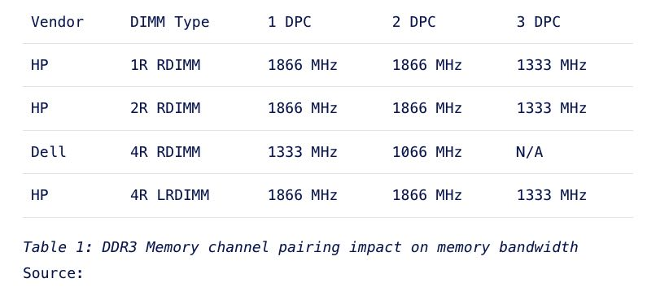
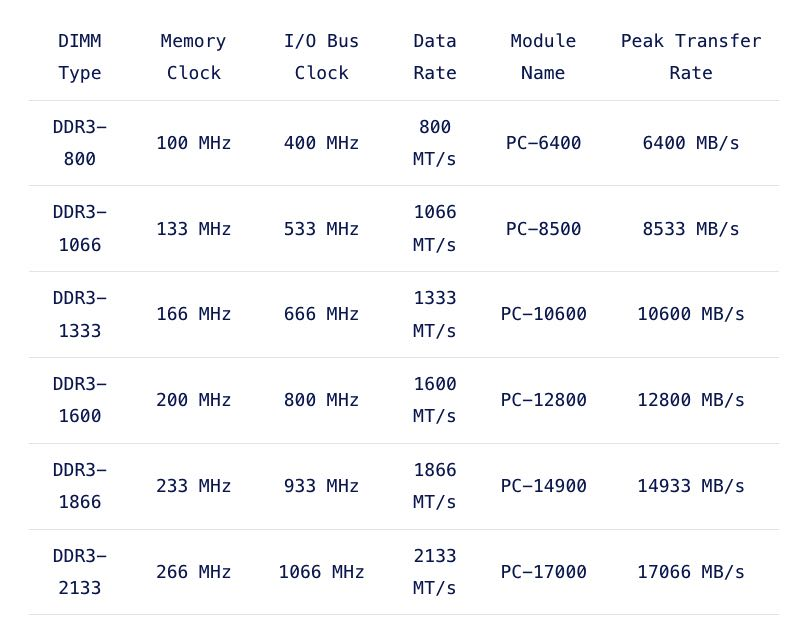
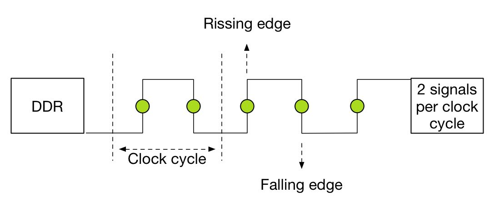
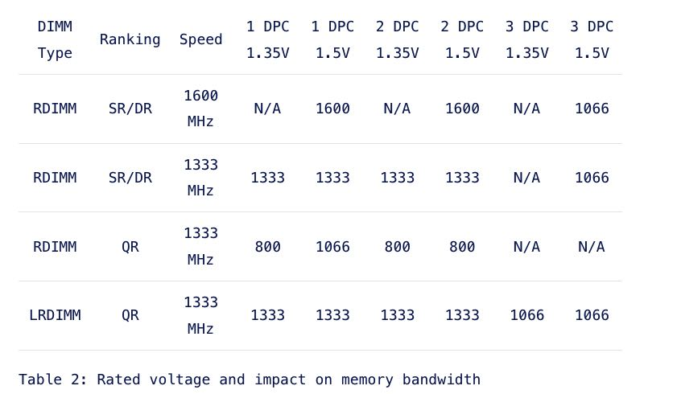

MEMORY DEEP DIVE: MEMORY SUBSYSTEM BANDWIDTH
https://frankdenneman.nl/2015/02/19/memory-deep-dive-memory-subsystem-bandwidth/
这节主要将影响带宽的几个因素：
- DPC
- Clock Freq
- Voltage
- ECC
第一个影响因素就是DPC(DIMM per channel).提高DPC通常目的是为了扩充容量，但是DPC越高memory bank工作频率就会越低，进而降低带宽。下图是几种DIMM在不同DPC下面的工作频率。

Unfortunately, there is a downside when aiming for high memory capacity configurations and that is the loss of bandwidth. As shown in Table 1, using more physical ranks per channel lowers the clock frequency of the memory banks. As more ranks per DIMM are used the electrical loading of the memory module increases. And as more ranks are used in a memory channel, memory speed drops restricting the use of additional memory. Therefore in certain configurations, DIMMs will run slower than their listed maximum speeds.
第二个影响因素就是DIMM的工作频率。这里我有点没有看明白: 1. 为什么这里Memory Clock和上面差距这么大？难道不是一个东西？ 2. 为什么还有IO Bus Clock? 这个和Memory Clock有啥差别？(下面解释是bus bclock mutiplier = 4)。计算公式下面也有，Data Rate = IO Bus Clock * 2(这个可能就是上面图中的频率), 因为一个时钟周期有两个signals. 然后Peak Transfer Rate = Date Rate * 64bits.


DDR stands for double data rate which means data is transferred on both the rising and falling edges of the clock signal. Meaning that the transfer rate is roughly twice the speed of the I/O bus clock. For example, if the I/O bus clock runs at 800 MHz per second, then the effective rate is 1600 mega transfers per second (MT/s) because there are 800 million rising edges per second and 800 million falling edges per second of a clock signal running at 800 MHz.
The transfer rate refers to the number of operations transferring data that occur in each second in the data-transfer channel. Transfer rates are generally indicated by MT/s or gigatransfers per second (GT/s). 1 MT/s is 106 or one million transfers per second; similarly, 1 GT/s means 109, or one billion transfers per second.
Please be aware that sometimes MT/s and MHz are used interchangeably. This is not correct! As mentioned above, the MT/s is normally twice of the I/O clock rate (MHz) due to the sampling, one transfer on the rising clock edge, and one transfer on the falling. Therefore it’s more interesting to calculate the theoretical bandwidth. The transfer rate itself does not specify the bit rate at which data is being transferred. To calculate the data transmission rate, one must multiply the transfer rate by the information channel width. The formula for a data transfer rate is:
Channel width (bits/transfer) × transfers/second = bits transferred/second
This means that a 64-bit wide DDR3-1600 DIMM can achieve a maximum transfer rate of 12800 MB/s. To arrive at 12800 MB/s multiply the memory clock rate (200) by the bus clock multiplier (4) x data rate (2) = 1600 x number of bits transferred (64) = 102400 bits / 8 = 12800 MB/s
第三个影响因素是Voltage. 低电压会会降低工作频率，带宽也会随之降低。

Low Voltage RAM is gaining more popularity recently. DDR3 RDIMMs require 1.5 volts to operate, low voltage RDIMMS require 1.35 volts. While this doesn’t sound much, dealing with hundreds of servers each equipped with 20 or more DIMM modules this can become a tremendous power saver. Unfortunately using less power results in a lower memory clock cycle of the memory bus. This leads to reduced memory bandwidth. Table xyx shows the memory bandwidth of low voltage DDR3 DIMMs compared to 1.5V DIMM rated voltage.
第四个影响因素是ECC. 每8个DRAP Chips需要配置一个来做error detection/correction. 具体怎么实现我不是特别清楚，看上去这个error code也需要读取到memory controller上进行校验，如果是这样的话那么有效带宽就要降低12.5%, 实际性能上会下降2-3%.
Error Checking and Correction (ECC) memory is essential in enterprise architectures. With the increased capacity and the speed at which memory operates, memory reliability is an utmost concern.
DIMM Modules equipped with ECC contain an additional DRAM chip for every eight DRAM chips storing data. The memory controller to exploits is an extra DRAM chip to record parity or use it for error-correcting code. The error-correcting code provides single-bit error correction and double-bit error detection (SEC-DED). When a single bit goes bad, ECC can correct this by using the parity to reconstruct the data. When multiple bits are generating errors, ECC memory detects this but is not capable to correct this. The trade-off for the protection of data loss is cost and performance reduction. ECC may lower memory performance by around 2–3 percent on some systems, depending on application and implementation, due to the additional time needed for ECC memory controllers to perform error checking.